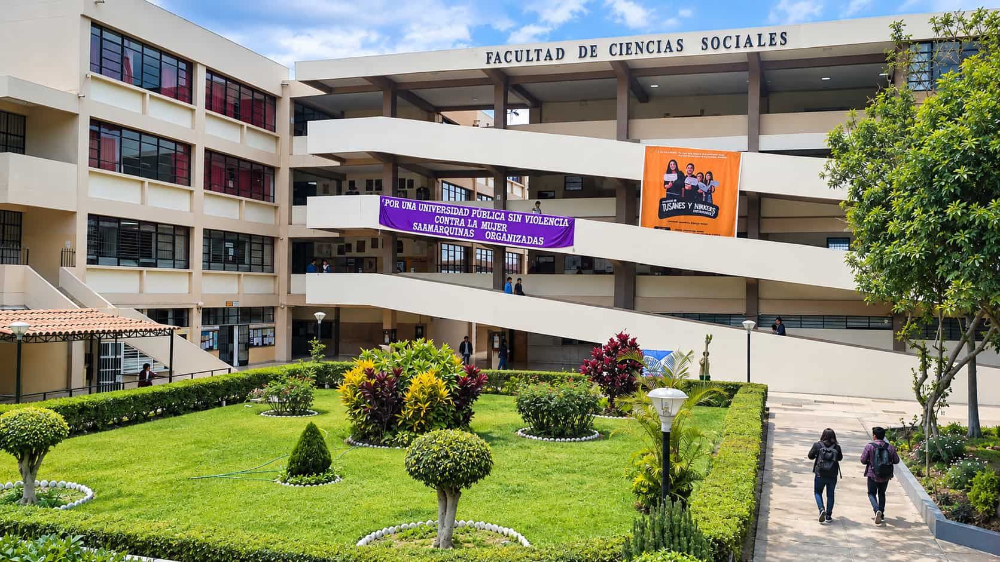
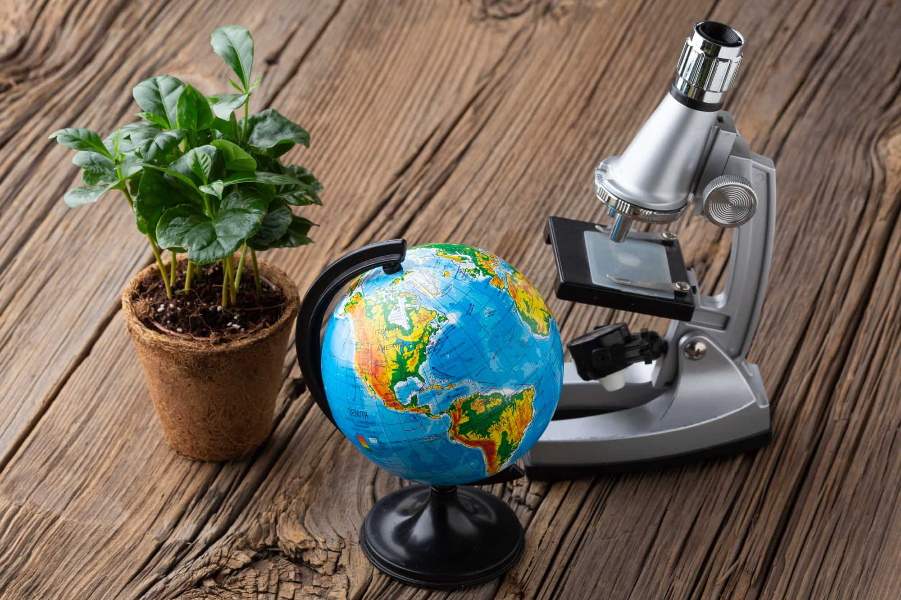

Seminario de jóvenes investigadores
Encuentro para presentar avances de tesis y prácticas. Fecha por confirmar.
Abrimos la carrera de Innovación y Desarrollo Social para quienes quieren estudiar los problemas de Áncash con investigación, trabajo en equipo y herramientas de gestión de proyectos.
Ver las carreras Cómo se organizan los ciclosEncuentro para presentar avances de tesis y prácticas. Fecha por confirmar.
Salida a comunidades del Callejón de Huaylas. Fecha por confirmar.
Mesa sobre lluvias, deslizamientos y glaciares. Fecha por confirmar.
Convocatoria a ayudantías de investigación
Feria de avances de tesis
Charla informativa para familiasLa Facultad de Ciencias Sociales estudia los problemas sociales, económicos, culturales y políticos de Áncash. Las clases combinan lectura, debate y salidas a campo: mercados, asambleas, escuelas, gobiernos locales y faenas comunales en el Callejón de Huaylas.
La investigación parte de lo que ocurre en Huaraz y en la Cordillera Blanca: agua, trabajo, migraciones, fiestas, tierras y servicios. Trabajamos con comunidades quechua hablantes y castellano hablantes, y el quechua forma parte de la formación: lengua de entrevista, de archivo y de devolución de resultados.

Estudia parentesco, ritual, memoria y vida cotidiana en comunidades rurales y barrios de Huaraz, con trabajo etnográfico.
¿Cómo se vive y se nombra el mundo en las comunidades de Áncash?
Analiza desigualdades, trabajo, educación y conflictos urbanos, con encuestas, entrevistas y datos locales.
¿Cómo crece Huaraz y quién queda afuera?
Se ocupa de gobiernos regionales y municipales, partidos, presupuestos y participación ciudadana en Áncash.
¿Quién decide el presupuesto de un distrito?
Lee precios, empleo, agricultura de valle y economía de montaña para entender cómo se sostiene un hogar y un distrito.
¿Cómo se sostiene un hogar en la montaña?
Sigue cooperación, fronteras, migraciones y acuerdos que llegan a la sierra desde Lima y desde el extranjero.
¿Qué llega a la sierra desde afuera y qué sale de aquí?
Ciclos I a IV: formación común de la facultad. Lectura, escritura, métodos, estadística y quechua.
Ciclos V a VIII: el plan propio de tu carrera, con prácticas de campo y cursos de especialidad.
Ciclos IX y X: práctica preprofesional, seminario de tesis y el proyecto final.

Fechas, vacantes, costos y requisitos se informan solo por los canales oficiales.